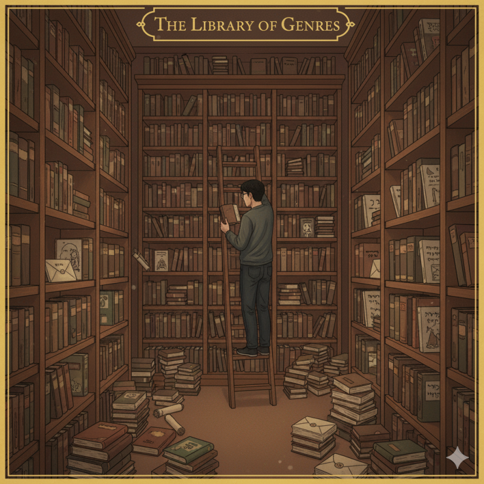
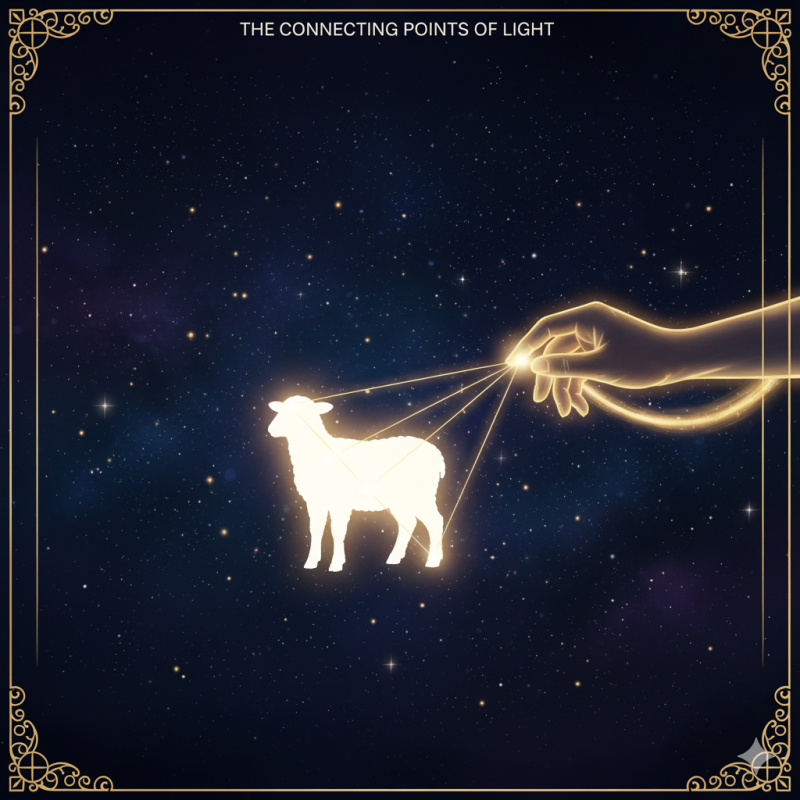

성경 어떻게 읽어야 할까요? 2편 성경이 어려운 3가지 진짜 이유 (ft. 조각난 그림을 맞추기 힘든 이유) 안녕하세요~!! '빌드업 메시지'입니다. 지난 편에서는 성경을 왜 ‘점’이 아닌 ‘선’으로, 즉 통합적으로 읽어야 하는지에 대해 이야기했습니다. 오늘은 한 걸음 더 나아가, “왜 우리는 성경을 통합적으로 읽는 데 어려움을 겪는 걸까?”에 대한 답을 찾아보려 합니다. 우리가 성경이라는 퍼즐을 맞추기 힘든 이유는,
퍼즐 조각 자체가 너무 오래되고, 낯선 나라의 그림이며, 종류도 제각각이기 때문입니다. 이 장애물들의 정체를 알면, 퍼즐을 맞출 전략을 세울 수 있습니다. 1. 시간의 산 : 3,500년이라는 시대의 간극
성경의 이야기들은 까마득한 과거의 사건들입니다. 모세 오경은 약 3,500년 전, 예수님 시대는 약 2,000년 전의 이야기죠. 이 엄청난 시간의 간극은 성경을 파편적으로 이해하게 만드는 주된 원인입니다. 예를 들어, 구약의 수많은 제사법을 오늘날의 관점으로만 보면 그저 복잡하고 의미 없는 종교의식처럼 보입니다. 하지만 이것이 장차 오실 예수 그리스도의 완벽한 제사(구속)를 예고하는 예표/ 모형이라는 전체 구속사의 맥락을 알 때, 비로소 그 조각은 제자리를 찾고 의미를 갖게 됩니다. 2. 문화와 언어의 산 : 낯선 세계, 낯선 표현
성경은 고대 중동(근동)이라는 낯선 문화적 배경 속에서 기록되었습니다. 이 문화의 코드를 모르면 우리는 성경의 깊은 의미를 놓치고 표면적인 글자만 보게 됩니다. 예를 들면, 탕자의 비유에서 아버지가 ‘달려갔다’는 행동은, ‘아들을 정말 사랑했구나’라는 피상적인 이해를 넘어, 당시의 성인 남자가 다닐 때 다리나 발목이 드러나는 것은수치스러운 일이었다는문화적 배경 안에서 이해한다면 ‘모든 체면과 수치를 버리고 아들을 용서한 하나님의 폭발적인 사랑’이라는 깊은 의미를 담고 있음을 알 수 있게 됩니다. 이런 문화적 배경들이 모여 성경 전체를 흐르는 ‘하나님의 사랑’이라는 주제를 더욱 풍성하게 만들어 줍니다. 이 연결고리를 놓치면 이야기는 단편적인 교훈으로 전락합니다. 3. 장르와 구조의 산: 66권짜리 총서(叢書) 사용법

성경은 역사, 율법, 시, 예언, 편지 등 다양한 장르의 글들이 묶여 있습니다. 각 장르의 규칙을 모르고 읽으면, 시적인 표현을 과학적 사실로 오해하거나 예언의 상징을 문자 그대로 해석하는 등 파편적인 오류에 빠지기 쉽습니다. 또한 성경은 연대순으로 배열되어 있지 않다는 점도 중요합니다. 특히 예언서들의 경우, 책의 분량 순서 등으로 편집되어 있어 시간적 순서가 뒤섞여 있습니다. 이런 구조를 모르고 읽으면, 각 예언이 어떤 역사적 상황 속에서 선포되었는지, 그리고 그것이 어떻게 성취되어 구원 역사를 이루어 가는지를 놓치게 됩니다.
이처럼 성경을 통합적으로 읽는 것은, 이 3개의 높은 산을 넘어 시간과 공간, 장르를 초월해 기록된 하나님의 큰 그림을 보려는 의식적인 노력입니다. 자, 이제 우리는 성경을 통합적으로 읽는 것을 방해하는 장애물들을 확인했습니다. 그렇다면 이 산들을 넘어 성경이라는 보물 지도를 완성할 구체적인 방법은 무엇일까요?

다음 마지막 3편 "성경, 점과 선을 연결하는 4단계 독서법"에서 그 방법을 전해 드립니다. 절대 놓치지 마세요!